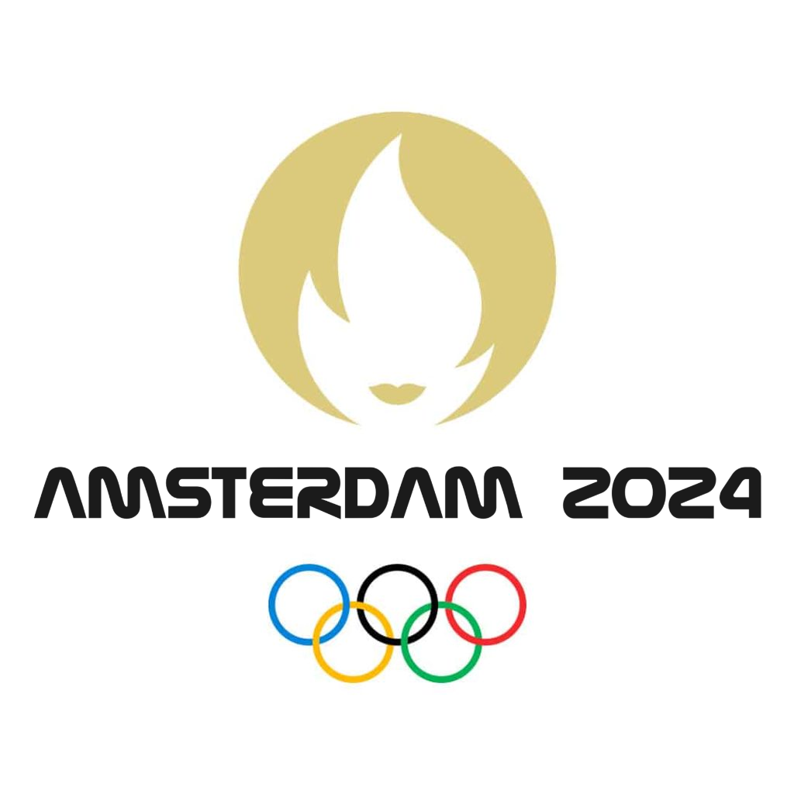

Paris is hosting the Paralympics in 2024. One of the events at the Paralympics is an open-water
swimming event in the Seine (apparently the water is clean or so the French say). Since the City
of Amsterdam thinks it is better than Paris, they want to host an event before the Paralympics,
snubbing the Parisians. The idea is to host a 5km. open water swimming event through the
canals of Amsterdam. You are asked by the municipality of Amsterdam to advise on the
feasibility of the event from the perspective of the safety of the partaking athletes from an
environmental perspective. The event is going to be hosted in May.
